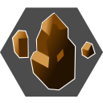

基礎知識
戦闘関係

スキル（攻撃アイテム及び回復アイテム使用時のスキルも含まれる）にはそれぞれ、「属性」が設定されている。
属性は以下の15種類存在する。
下の通り、ゲーム内では各属性にアイコンも設定されており、戦闘中にはアイコンで属性が表示される。
どのマークが何属性なのかは、ヘルプ（メニュー画面なら装備またはスキル一覧で⊕/OPTIONSボタン、戦闘中なら⊖/タッチパッドボタン）で確認可能。

土属性：「大激怒岩盤割り」「まんがんぜんせき」など種類はそれなりに多いが、「火属性の相反属性は水属性」といった属性同士の相性などは本作に存在しないので、色々と暗記する必要はない。
ただし、リメイク版では敵の弱点・耐性属性が戦闘中に表示されるようになったため、操作キャラがどの属性のスキルを所持しているか、ある程度把握しておくと戦闘がスムーズに進むだろう。もちろんこちらも、無理に暗記する必要はない。
▶スキルでも述べたが、攻撃系のスキルのうち、
という傾向があることも覚えておいて損はない。ただし例外もあるので注意。
SFC版では属性自体がほぼ隠し要素と言っても良いほど、何に関わっているのかわかりにくかった。
リメイク版でもSFC版同様、反撃や敵の行動異常に関わる他、上で述べた通りに弱点・耐性属性という要素が加わっている。
SFC版で非常にややこしい仕様として存在していた回避属性の要素は削除されているが、回避属性の設定の一部は弱点・耐性属性へ引き継がれている。
以下でそれぞれの要素について説明する。
リメイク版では、敵に属性による「弱点」と「耐性」が設定され、戦闘中に確認できる。
味方のスキルを選んでから敵にカーソルを合わせると、敵の行動ゲージ下に、弱点の場合は敵に「 WEAK 」、耐性の場合は「 RESIST 」と表示される。
画面左下にはもっと詳しい敵の情報（弱点・耐性属性を含め、HPや現在のステータス異常、能力増減など）も表示される。
選んだスキルの範囲内だけではなく、範囲外にも方向キーでカーソルを移動できるので、スキル範囲外の敵の状態も確認できる。
弱点属性のスキルで攻撃すると敵へのダメージ量が高くなり、耐性属性のスキルで攻撃するとダメージ量が低くなる。
「弱点属性のスキルで攻撃すればその敵を一撃で倒せる」というのなら優先して使うと良いだろうが、かといって弱点属性で攻撃することが必ずしも有利ではないし、耐性属性での攻撃が必ずしも不利ではない。
「弱点属性のスキルではないが、次に敵から攻撃を喰らわない位置から攻撃できるスキルで攻める」
「耐性属性のスキルだが、向き変え・吹き飛ばし効果で敵を嵌めることができ無傷で倒せる」
など、戦闘中は属性以外にも考慮しなければならないことが多いからである。
また、味方がほぼ全てのスキルを覚えるであろう最終編で顕著だが、「弱点属性だが威力：小のスキルより、弱点属性ではないが威力：中以上のスキルで攻撃した方がダメージが高くなる」こともある。
このあたりは、プレイヤーそれぞれの戦略で考えていけば良い。
ザコ戦でレベルが上がるシナリオでは、味方のレベル、つまり覚えているスキルに合わせて、敵の弱点属性が設定されていることが多い。
特に原始編や中世編はこの傾向が強いので、シナリオを進めつつザコ戦できちんとレベル上げをしていけば、ザコ敵の弱点を突きやすくなっている。
敵だけではなく、味方キャラにも属性による「耐性」が設定されており（味方キャラには「弱点」は存在しない）、メニュー画面の装備→ /
/ ボタンで画面を切り替えた時に「属性耐性」の項目で確認ができる。
ボタンで画面を切り替えた時に「属性耐性」の項目で確認ができる。
「属性耐性」の項目で、金色の輪（フレーム）で囲ってある属性は、そのキャラが元々所持している耐性に当たる。
また、装備アイテムの中には「耐性属性」が設定されているものがあり、装備すると該当属性に対する耐性が付く（「属性耐性」の項目で、明るく表示される）。
装備アイテムの「耐性属性」は、アイテム欄で装備アイテムを選び、 /
/ ボタンで表示切替すると表示されるようになっている。
ボタンで表示切替すると表示されるようになっている。
装備品が増える最終編では、できるだけ多くの耐性が付くよう装備の組み合わせを考えてみても良いだろう。
本作では敵が攻撃してきた時、スキル名は表示されるが、そのスキルの属性が何なのかはわからない。
だが、味方キャラに「RESIST」の表示が出た時は、耐性でダメージ量を抑えたということになるので、何の属性のスキルで攻撃されたのかだいたい判断できる（複数の「耐性属性」を持っている状態だと、完全に絞り込むことはできないが）。
ただし、基本的に敵のスキルの属性は、SFC版とほぼ変わらない。おそらく背属性が無属性に変更された程度だろう。
耐性属性についてだが、本作のダメージ量はランダムで±20％程度のブレがある上で、下の耐性属性による軽減量で述べる通り、耐性属性だと25％程度ダメージ量の軽減が可能と推測される。
このため、数回攻撃した（攻撃された）程度では、ダメージが軽減されたかどうかわかりにくい場合もあるだろう。
とはいえ、ボス戦では、ボスが使ってくるスキルの耐性属性に当たる装備を身に着けておくと、それなりにダメージを軽減できる。
もちろん戦闘前にはボスが何の属性の攻撃をしてくるかわからないが、当攻略ではボス敵については使用スキルの属性も表記しているので、参考にしていただきたい。
なお、耐性属性についてはダメージ量が減ったかどうかややわかりにくい一方で、弱点属性についてはダメージ量が明らかに上がる。
敵に対して弱点や耐性となる属性で攻撃した時、味方キャラが専用のボイスで反応することがある。
弱点属性で攻撃した時には喜ぶことが多いのでわかりやすいのだが、耐性属性の場合は何に反応したのか、少しわかりにくいキャラもいる（サンダウンが西部編にてマッドドッグと戦う時、飛属性攻撃をするとサンダウンがダメージボイスのようなボイスで反応することがあるが、これは飛属性耐性があるマッドを飛属性スキルで攻撃したからである）。
SFC版の敵データ（その他のデータも）については、既に優れたデータ集があるため、以下ウェブサイト様などを参照していただきたい。
キャラの素の状態または装備品によって耐性属性が付いた場合、敵が該当の属性のスキルで攻撃した時に、ダメージ量をおよそ25％減らすことができる（筆者調べ）。
厳密には、「味方の防御の値が0の時」に、ダメージ量がおよそ25％減る。
あくまでも推測になるが、▶ダメージ量のブレ検討 > ブレの計算（と攻撃力）で検証した結果、本作のダメージ量は、
（「敵味方のステータスから計算した値」×「耐性属性または弱点属性の倍率」＋「武器の攻撃力」−「防具の防御の値の合計」）×「0.8～1.2の乱数」
※厳密には乱数幅は「0.8 ≦ (乱数) < 1.2」
のように計算されていると思われる。ただし敵は攻撃・防御の値ともにゼロである（と推測される）。
よって、敵からダメージを食らった時には、
（「敵味方のステータスから計算した値」×「耐性属性ありなら0.75、耐性属性なしなら1」−「防具の防御の値の合計」）×「0.8～1.2の乱数」
というような計算がされていると推測される。
つまり、味方の防御の値が大きいと、耐性属性での軽減が（割合として）少なめに見える場合もある。
おそらく、敵が耐性を持っている場合も25％程度ダメージ量が減るのだろうと思われる（が、敵については確認する方法がない）。
味方が敵を攻撃する場合、敵には防御の値が設定されていないので、
このようにダメージ量が計算されていると思われる。
つまり「武器の攻撃の値がそのままダメージ量として加算されている」という可能性が考えられる。
このため、「武器の攻撃力」が関わらないスキルでは、耐性属性・弱点属性の影響がやや大きめに出ると思われる。
一方、「敵味方のステータスから計算した値」が極端に小さい場合は、耐性属性・弱点属性の影響がさほどないということになる。
敵のステータス（防御関係）が高い場合が該当し、最終編のマスタードラゴンやピスタチオといった硬い敵は、「武器の攻撃力」の値しかダメージが与えられない。よって、耐性属性でのスキルでも、無属性攻撃であるユンの「空破旋風手」でも、耐性属性の影響がほぼ見られない。
なお、弱点属性による増加量は、味方キャラや装備品に弱点属性が存在しないため検証ができない。
あくまでも筆者の体感になるが、敵を弱点属性で攻撃すると、おそらく通常の1.5～2倍程度のダメージ量になっているのではないかと思われる。
（弱点でも耐性でもない属性のスキルで同程度のダメージを与えられる2種類の敵に対し、片方は弱点、片方は弱点ではない別属性のスキルを当てると、ダメージ量の差が1.5～2倍くらいになるため）
実際のところは不明。
相手から攻撃を受けた時に自動的に反撃をするスキルが存在しているが、反撃の仕組みにも属性が関わっている。
▶スキル > スキルによる反撃にて触れたが、SFC版には各スキルに対し、「どの属性のスキルをくらったら反撃としてスキルを出すか」という反撃属性が設定されていた。
おそらくではあるが、リメイク版でもこの設定はほとんどが引き継がれている。
本作で用いられている用語ではないが、当攻略では、「どの属性のスキルをくらったら反撃としてスキルを出すか」の設定は、SFC版に引き続き「反撃属性」という用語で説明していくこととする。
功夫編では老師から教わるスキルの大半が「反撃可能」と説明されているが、実際に戦闘を行ってみると、敵から攻撃を食らっても常に反撃をする訳ではない。
「百里道一歩脚」に『対足技／反撃可能』とあるとおり、「百里道一歩脚」は敵から足属性のスキルを食らった時のみ、「百里道一歩脚」で反撃をする、という仕様なのである。
条件さえ満たしていれば、反撃は必ず発動する。
敵もまた、特定の属性のスキルを食らった時のみ反撃してくることがあるが、実際に反撃を食らうまで何に対して反撃してくるかはわからない。
反撃を出す条件は、
を全て満たした時であり、条件を満たしていれば100％反撃が発動する。
上に記した「百里道一歩脚」であれば、
以上を全て満たしている時、心山拳老師は必ず「百里道一歩脚」で反撃する。
本作では敵のスキルの属性は表示されないため、逆に言えば、「百里道一歩脚」の反撃が発動した場合、相手のスキルの属性が足属性だったということがわかる。
反撃属性の設定はSFC版からほぼ引き継がれているが、反撃属性が追加されたスキルもあるため、SFC版とは異なる戦法を練らねばならないバトルも存在する。
オルステッドの「プラスリンク」はSFC版では悪属性攻撃にしか反撃せず、反撃の機会がほとんどなかったが、リメイク版では鋭属性攻撃にも反撃するようになったため、中世編序盤から頻繁に反撃を出してくれるようになっている。
一方でボス敵でも反撃属性が増えていることがあり、功夫編ラストバトルでは、オディワン・リーの「狂狼拳」に手/足属性の反撃属性が設定されたため、接近時に手/足属性で攻撃すると、反撃の「狂狼拳」→自身後退で距離を取られる→「狂襲飛竜脚」というコンボを食らう可能性が高く、非常に危険。
また、ストレイボウの反撃専用スキル「ブラックアビス」は、SFC版だと手/足/突/締/飛/背/火/水/風/土/精/悪属性に対する反撃だったが、リメイク版では鋭属性攻撃に対しても反撃するよう設定されており、中世編ラストではオルステッドが数多く所持する鋭属性攻撃（「カットワンウェイ」や「Ｖシャイン」など）にも反撃してくるようになった。
無属性については、SFC版同様に反撃属性が設定されているスキルがない模様。
よって、無属性のスキルで攻撃すればどんな敵であっても反撃されずに済む。
味方のスキルではユンの「空破旋風手」とサモの「ほいこーろー」が該当。
もちろん、敵からの攻撃についても、無属性の攻撃であったら味方側は反撃しない。
サンダウンの「マルチカウンター」は無属性以外の全ての属性に対して反撃するため、逆に、サンダウンが「マルチカウンター」で反撃できる位置に居ても反撃を出さない場合、敵の攻撃は無属性だと判断できる。
敵が反撃してきた時、味方キャラが専用のボイスで反応することがある。
▶行動異常で詳細を記しているが、敵の中には「特定の属性のスキルをくらうと行動異常になる」という設定がなされている場合がある、と思われる。
この仕様もSFC版の時から存在していたのだが、行動異常共々隠し要素だった。
リメイク版でもきちんとした説明がある訳ではないので、「敵が突然恐怖状態になったが、プレイヤー側が使ったスキルに恐怖状態を付加する効果がないので、理由はよくわからない」というようなことがしばしば起きる。
実際には、「特定の属性のスキルをくらうと行動異常になる」という設定によって引き起こされている（と思われる）。
SFC版とは異なり、敵が行動異常になったことが明確にわかるため、プレイヤー側には有利。
味方キャラクターが元々所持している耐性属性は以下の通り。
リメイク版における各キャラの耐性属性は、SFC版における隠し要素であった回避属性の設定を多少なりとも受け継いでいるようである。
なお、ざきとブリキ大王、キャプテンスクウェアはメニュー画面で耐性を確認することができないが、ざきとブリキ大王については敵として戦う時に確認ができる（ブリキ大王については最終編オルステッド主人公時に確認可能）。
キャプテンスクウェアは、ミニゲーム「キャプテンスクウェア」内で敵の攻撃を受けた際、SFC版で精神属性に設定された「威嚇」などのみRESIST表記が出たため、精属性耐性が付いていると思われるが確定ではない（SFC版の設定のままなら、「キャプテンスクウェア」内の敵の中に足・鈍・締・飛・火・善・悪属性のスキルを使用してくる敵がいないので、これら属性の耐性の有無は確認できない）。
| キャラクター | 耐性属性 |
|---|---|
| アキラ | |
| タロイモ |
|
| 無法松 | |
| ブリキ大王 | （なし） |
| キューブ |
|
| キャプテンスクウェア |
|
| おぼろ丸 | |
| とらわれの男 | |
| カラクリ丸 | |
| 心山拳老師 | |
| ユン・ジョウ | |
| レイ・クウゴ | |
| サモ・ハッカ | |
| 高原 日勝 | （なし） |
| ポゴ | |
| ゴリ | |
| べる | |
| ざき | |
| サンダウン | |
| マッドドッグ | |
| オルステッド | （なし） |
| ストレイボウ | |
| ウラヌス | |
| ハッシュ |
例外として、中世編ラストバトルでのストレイボウと、最終編のNEVER ENDのオルステッド戦（ピュアオディオ戦後）におけるオルステッドは、味方の時とは弱点・耐性属性が異なる。
また、最終編で、戦って仲間にする必要があるキャラ（ポゴやおぼろ丸など）は、各シナリオクリア時に装備していた装備品の耐性属性が付いたままになっているため、上で示した耐性属性に加えて、他の耐性属性が付いていることもある。
ここまで記した属性の仕様を読めばわかる通り、回復スキル（回復アイテム含む）の属性は、本作においてほぼ意味がない。
味方キャラが属性耐性を持っていたとしても、回復スキルには反映されず、回復量が変化することはない。
もちろん、回復スキルに対して反撃することもない。
よって、回復スキルの属性については気にする必要はない（と思われる。何かしら隠された仕様がない限り）。
SFC版でも回復技の属性にはさほど意味はなかったのであるが、SFC版には回避属性という、リメイク版とは全く別の属性関係の仕様が存在しており、「何かしらの技を使用するとその場に技の属性が残る」ため、回復技の属性にも一応は意味があった。